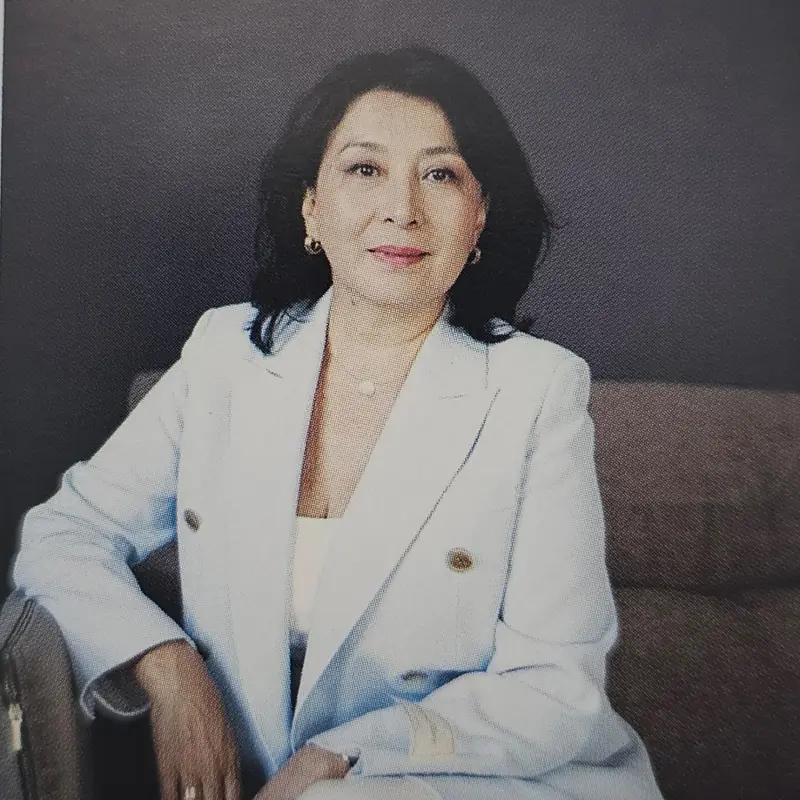

Партнёр с 2019
Partner since 2019
2019-дан серіктес
Бактыгуль Кадыралиева
Baktigul Kadyralieva
Бақтыгүл Қадыралиева
Компания не только открыла стиль жизни в духе путешествий, но и сблизила нашу семью ещё сильнее. The company opened not only a travel lifestyle, but brought our family even closer together. Компания тек саяхат өмір салтын ғана емес, отбасымызды одан да жақын етті.
Первый партнёр своего Борд-директора и сестры — Чынаркул. За 6 лет — 8 круизов: Америка, Япония, Европа, Мексика, Доминикана, Юго-Восточная Азия. Все её братья, сёстры и близкие — партнёры и члены клуба. First partner of her Board Director and sister Chinarkul. In 6 years — 8 cruises across America, Japan, Europe, Mexico, Dominican Republic, Southeast Asia. All her siblings and relatives are partners and club members. Өзінің Борд директоры әрі әпкесі Шынарқұлдың алғашқы серіктесі. 6 жылда 8 круиз: Америка, Жапония, Еуропа, Мексика, Доминикана, Оңтүстік-Шығыс Азия. Бауырлары мен туыстарының барлығы — серіктестер мен мүшелер.